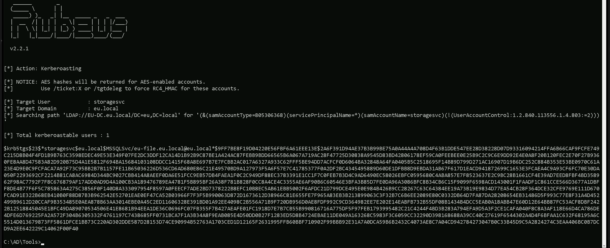
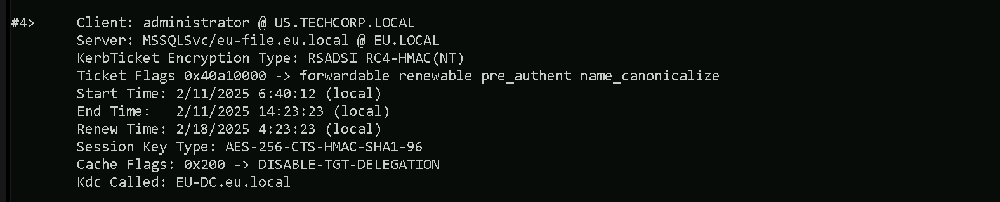

CRTE - Certified Red Team Expert
Cross Forest Attacks - Kerberoast Attack
Cross-forest Kerberoasting is an advanced attack technique that allows us to exploit trust relationships between Active Directory forests to obtain service tickets and attempt to crack them offline, potentially leading to privilege escalation. To fully understand and master this attack, we need to break it down into its key aspects, focusing on how we can execute it efficiently, evade detection, and maximize its impact.
When dealing with a multi-forest environment, we take advantage of the fact that trusts allow authentication across forests. If a forest trust is established and configured to allow authentication from users in another forest, we can interact with the target domain just as any authenticated user would. This means we can enumerate users, groups, ACLs, and most importantly, service accounts that have registered Service Principal Names (SPNs). The key to Kerberoasting, whether in a single-forest or cross-forest scenario, is identifying these service accounts because they often have weak passwords that can be cracked offline.
To begin the attack, we enumerate the trusts between forests, specifically looking for external or forest trusts where the intraForest attribute is set to false. This tells us that we are dealing with separate forests rather than just another domain within the same forest. Once we confirm that we can authenticate into the other forest, we extract a list of user accounts with SPNs registered. This can be done using tools like PowerView, the Active Directory PowerShell module, or directly querying LDAP.
Once we have identified target service accounts, we request service tickets for them. The Kerberos authentication process allows any authenticated user to request a Ticket Granting Service (TGS) ticket for any SPN. In a cross-forest context, this means we can request these tickets from another forest if our trust permissions allow it. Using Rubeus, we extract these tickets and save them for offline brute-forcing. Unlike NTLM-based attacks that require us to interact with the domain controller continuously, Kerberoasting is entirely offline once we have the tickets, making it stealthier.
A key point about cross-forest Kerberoasting is the default encryption behavior. Even in modern Active Directory environments, AES encryption is not used by default when service tickets are requested across a forest trust. Instead, Kerberos falls back to using RC4 encryption, which is far weaker. This makes it easier for us to crack the extracted hashes using tools like Hashcat or John the Ripper, without worrying about encryption downgrade detection mechanisms. Since we don’t need to force Kerberos to use RC4 manually, we avoid triggering security solutions that might flag unusual encryption behavior.
From an operational security (OPSEC) perspective, cross-forest Kerberoasting has a significant advantage, it generates almost no detectable anomalies. The primary log event it triggers is event ID 4769, which records Kerberos service ticket requests. In a large multi-forest organization, these logs are abundant and typically ignored due to the high volume of legitimate authentication traffic. This makes it extremely difficult for defenders to pinpoint our attack, as it blends into normal activity.
Beyond just obtaining service account credentials, we need to consider the broader implications of our attack. If we successfully crack a service account password, we can check whether that account has administrative privileges within the target forest or even back in our original forest. Trust relationships in Active Directory are often misconfigured, allowing accounts from one forest to have elevated access in another. This opens up possibilities for lateral movement, privilege escalation, and even full domain compromise across forests.
Mastering cross-forest Kerberoasting means understanding not just how to execute it, but also how to identify environments where it will be most effective. Multi-forest setups are common in enterprises, often due to mergers, acquisitions, or security segmentation requirements. These environments frequently have complex trust configurations that provide us with opportunities to exploit misconfigurations and weak credentials. By combining this technique with other attack vectors, such as abusing inter-forest group memberships or privilege escalation through misconfigured ACLs, we can significantly expand our foothold in an Active Directory network.
In short, cross-forest Kerberoasting leverages default trust configurations and weak service account passwords to extract Kerberos tickets from another forest, crack them offline, and use the credentials to escalate privileges or move laterally. It is an extremely effective attack with low detection risk, making it a powerful tool in our offensive security arsenal.
Enumerating Named Service Accounts Across Forest Trust with ADModule
We should start our PowerShell session using InvisiShell, bypassing all powerShell defense mechanisms before we spawn the new PowerShell session.
RunWtihRegistryNonAdmin.bat

Let’s now import our ADModule and start our enumeration.
`Import-Module C:\AD\Tools\ADModule-master\Microsoft.ActiveDirectory.Management.dll
Import-Module C:\AD\Tools\ADModule-master\ActiveDirectory\ActiveDirectory.psd1Get-ADTrust -Filter 'IntraForest -ne $true' | %{Get-ADUser -Filter {ServicePrincipalName -ne "$null"} -Properties ServicePrincipalName -Server $_.Name}`

Well based on the enumeration output, we should ignore the KRBTGT account since it’s password its password is set by the machine.
Let’s keep our focus on the second account on our list, which is the storagesvc account.
It is possible to see that storagesvc service account is on eu.local domain and it seems to be a service account for MSSQL service.
Enumerating Named Service Accounts Across Forest Trust with PowerView
It is also possible to enumerate Name Service Accounts across forest trusts using PowerView with the following steps below.
`Import-Module .\PowerView.ps1
Get-DomainTrust | ?{$.TrustAttributes -eq 'FILTER_SIDS'} | %{Get-DomainUser -SPN -Domain $.TargetName}  We can see above that our PowerView module end up bringing more information about our target Service account name than ADModule do. Now that we have identified the target service account, let’s go ahead and request it’s Ticket Granting Service (TGS) hash. We will be using Rubeus to accomplish this task. We should encode the Rubeus argument(kerberoast`) with ArgSplit.bat and do the copy/paste into our session were Rubeus will be executed.
ArgSplit.bat

We should now run our Rubeus in the memory by using our favorite DotNet Loader.
C:\AD\Tools\Loader.exe -Path C:\AD\Tools\Rubeus.exe -args %Pwn% /user:storagesvc /simple /domain:eu.local

As we can see, we where able to request storagesvc kerberoas key. Optionally we can also use the flag /outfile to save this hash into a file with a name of our choice.
C:\AD\Tools\Loader.exe -Path C:\AD\Tools\Rubeus.exe -args %Pwn% /user:storagesvc /simple /domain:eu.local /outfile:C:\AD\Tools\storagesvc_kerberoas_hash.txt
Now, let's break down the arguments being passed to Rubeus:
kerberoast
This tells Rubeus to execute a Kerberoasting attack, which means it will request service tickets (TGS) for user accounts that have an SPN set.
/user:storagesvc
This specifies the target service account (storagesvc) that we want to perform Kerberoasting on. If this account has an associated SPN, Rubeus will request a ticket for it.
/simple
This flag tells Rubeus to display the extracted hash in a simplified format, making it easier to crack using tools like John the Ripper or Hashcat.
/domain:eu.local
This specifies the target Active Directory domain (eu.local) where the Kerberoasting attack will be executed.
/outfile:C:\AD\Tools\storagesvc_kerberoas_hash.txt
The ticket shown in our klist is related to a cross-forest Kerberoasting attack, and it appears after running Rubeus to request a service ticket for storagesvc.
However, instead of seeing a ticket for storagesvc, we see a TGS (Ticket Granting Service) ticket for MSSQLSvc/eu-file.eu.local@EU.LOCAL.
WHAT IS GOING ON HERE?

This situation is a perfect example of how SPN mapping in multi-forest environments can lead to unexpected results. Even though we attempted to target storagesvc, Active Directory returned a ticket for MSSQLSvc, which means the service account we targeted is likely running under that SQL service. This could still be a valuable ticket for further attacks, but we need to carefully enumerate SPNs to ensure we are extracting the correct hash.
This tells Rubeus to save the extracted hash into the specified file (storagesvc_kerberoas_hash.txt) instead of printing it to the console. This allows for offline cracking later.
Why Do We Have This Ticket?
When we requested a service ticket using Rubeus for storagesvc, the request went through the Kerberos authentication process. Since we are operating in a cross-forest environment, the authentication request had to be processed by the Key Distribution Center (KDC) in the EU.LOCAL forest because the target service account (storagesvc) belongs to that forest.
However, instead of receiving a service ticket for storagesvc, we now see a Kerberos TGS ticket for the MSSQL service (MSSQLSvc/eu-file.eu.local@EU.LOCAL), which suggests a few possible scenarios:
- Storagesvc Might Be a SQL Service Account
If the storagesvc account is linked to the MSSQL service on eu-file.eu.local, then requesting a service ticket for storagesvc might have resulted in a ticket for that service instead. Kerberos maps SPNs to the associated service accounts, so the ticket we received is actually for the SQL service that storagesvc is running under, rather than directly for storagesvc itself.
- An SPN Mapping Issue Could Have Redirected the Ticket Request
In Active Directory, service accounts can have multiple SPNs mapped to them. If storagesvc is registered with multiple SPNs (including one for MSSQL), the request could have returned the service ticket for MSSQL instead of directly for storagesvc.
- The Administrator Account Was Used to Make the Request
Looking at the ticket details, the client principal is administrator@US.TECHCORP.LOCAL. This suggests that we performed the Kerberoasting attack as an administrator user from US.TECHCORP.LOCAL, and the authentication request went to EU.LOCAL’s domain controller (EU-DC.eu.local). If administrator@US.TECHCORP.LOCAL had prior authentication or a session with the MSSQL service, the KDC might have issued a ticket for that service instead.
Cracking Kerberoas hash with John The Ripper
Now that we were able to understand what just happened, let’s move one and try to crack the requested kerberoas hash using john the Ripper or Hashcat.
C:\AD\Tools\john-1.9.0-jumbo-1-win64\run\john.exe --wordlist=C:\AD\Tools\kerberoast\10k-worst-pass.txt C:\AD\Tools\storagesvc_kerberoas_hash.txt

We can see above that we successfully cracked this kerberos hash, having Qwerty@123 as password.